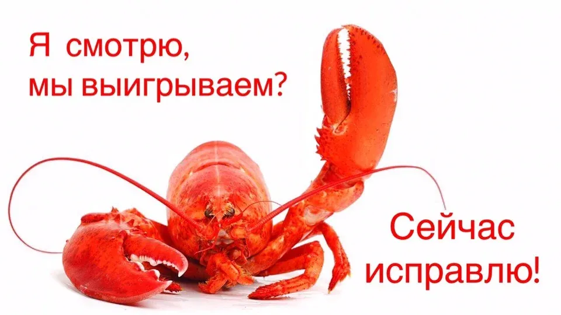

Кто такие раки и с чем их едят?
Игровая терминология часто вызывает вопросы у людей, не связанных с гейм-индустрией. Нередко можно услышать мнение, что все геймеры разговаривают на своём инопланетном языке, который понятен только им. Но иногда разногласия встречаются и внутри комьюнити.
Что может быть привычнее, чем окружающие тебя «раки»? Они везде. Среди друзей, с которыми ты решил посоревноваться в Мортал Комбат. Среди рандомно попавшихся за тебя тиммейтов, которые сливают беспроигрышную игру. Среди стримеров и летсплееров, которые пытаются научить свою аудиторию делать то, что не умеют сами. Но кто же они такие, эти «раки»? Чем они отличаются от нубов? И почему игровое сообщество до сих пор спорит о происхождении столь устоявшегося термина? Пытаемся разобраться.
Словари игровых терминов дают несколько разных определений:
Gamer Info Dictionary
«Рак — в сетевом общении, и в частности в игровой среде, человек, явно не постоялец данной темы. В отличие от нубства, раковство очень зазорно, поскольку раки не считают себя новичками в области, пытаясь вжиться в игровую среду, зачастую неумело пользуясь её терминологией и функционалом» .
Словарь игровых терминов и сокращений от Ongab
«Рак — так называют игрока, который остается нубом даже после года игры, т. е. раз за разом совершает те же ошибки, что и нубы. Кроме того, раки не воспринимают никаких советов, т. к. считают себя опытными игроками».
Так становится понятно, что в общем смысле «рак» уже не новичок в игре, он уже чувствует себя опытным и считает, что он не может быть неправ. И у него есть главная характеристика: что бы «рак» ни пытался делать (выполнять игровые манёвры, обсуждать интересные темы с сообществом, общаться, используя игровую терминологию), у него не получается. И это звучит как приговор.
Стоит отметить, что понятие раковства очень редко используется в несетевом игровом сообществе. Это обусловлено основной функцией «раков» — мешать окружающим, намеренно или нет.

Но откуда взялось понятие «рак»? Внутри игровых дисциплин ходят разные слухи о происхождении этого термина. Танкисты говорят, что «раки» названы так из-за того, что их низкие показатели КПД и процента побед светятся красным, а это цвет варёных раков (Wiki Wargaming Игровые Термины WoT).
Игроки ВоВа, которые наряду с «раком» используют также «краба», «клешнерука» и «омара», объясняют эти термины тем, что неспособность игроков выполнять свои роли обусловлена наличием клешней вместо рук. А клешнями, соответственно, неудобно нажимать на клавиши (Глоссарий на форуме World of Warcraft Battlenet).
Игроки говорят еще, что происхождение термина «рак» тесно связано с понятием «дно» в значении низкой статы игроков. То есть люди с низкой статистикой являются обитателями этого самого дна — раками. Однако самой правдоподобной версией является то, что понятие «рак» пришло в индустрию из зарубежных имиджбордов. И изначально оно не имело отношения к клешнеруким существам, а означало именно болезнь (cancer), убивающую атмосферу непринуждённого общения внутри комьюнити.
Напиши интересный текст и получи респект от читателей и редакции. Крутые материалы попадут в топ ленты на главной странице